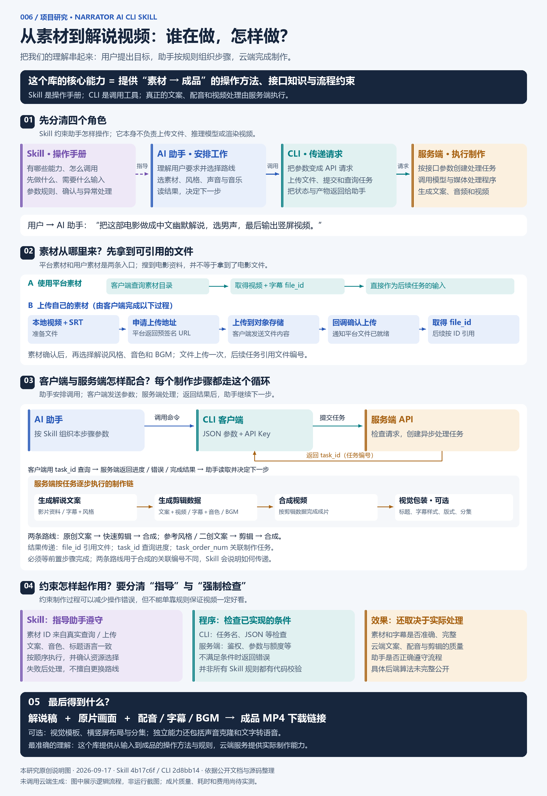

规则与知识
Skill
告诉助手有哪些能力、需要什么输入、按什么顺序操作，以及怎样传递结果。
核心文件：SKILL.md + references/
NARRATOR AI CLI SKILL · 能力与原理研究
它是一份供 Codex 等 AI 助手使用的操作手册。助手按规则安排制作步骤，客户端把指令交给服务端，由服务端处理素材并返回结果。
源码与文档研究已完成 · 成片质量、耗时与费用待实测
按图中 01 → 05 阅读：角色、素材、交互、约束，最后是成品。

这个库提供 Skill；配套 CLI 连接服务；云端提供真正的处理能力。
规则与知识
告诉助手有哪些能力、需要什么输入、按什么顺序操作，以及怎样传递结果。
核心文件：SKILL.md + references/
理解与安排
理解用户要求，读取 Skill，选择制作路线和参数，再根据任务结果继续下一步。
由 Codex 等宿主工具提供
请求与传递
上传素材、发送结构化请求、查询执行进度，把服务端的状态和产物返回给助手。
配套 Python 命令行客户端
处理与产出
执行文案生成、配音、剪辑数据生成与视频合成，并提供结果文件或下载链接。
内部具体算法未完整公开
图中的 AI 助手来自宿主工具，这个 Skill 仓库没有自行实现这位助手。服务端是否另外使用自建 Agent，目前不能从公开客户端确认。
以“中文、幽默风格、男声、竖屏解说”为例，理解一次制作如何进行。
助手确认影片、解说语言、风格、音色和 BGM。素材有两个入口：
客户端查询素材库 → 得到视频与字幕文件 ID → 后续任务直接引用。
准备视频 + SRT → 申请上传地址 → 上传至对象存储 → 回调确认 → 得到文件 ID。
搜索片名返回的是影片资料，不等于获取电影文件。Skill 本身也不打包全部素材。
助手组织本步骤参数，CLI 通过 API 提交。服务端创建异步任务并返回编号；客户端查询进度，完成后把结果交给助手。
“提交成功”不等于“制作完成”。只有前置步骤完成，才按对应接口要求进入下一步。
原创路线：fast-writing → fast-clip-data → video-composing。
二创路线：可选 popular-learning → generate-writing → clip-data → video-composing。使用预设风格时可跳过风格学习。
file_id 引用文件；task_id 查询任务；task_order_num 关联制作步骤。
合成时，原创路线使用 fast-clip-data 的关联编号；二创路线使用 generate-writing 的关联编号，并要求 clip-data 已完成。Skill 的价值之一，就是说明这些容易混淆的接口规则。
核对上游工作流文档 ↗最终效果是将原片画面与解说、配音、字幕和 BGM 组合成视频，助手取得并交付 MP4 下载链接。
平台另有声音克隆、文字转语音等独立任务；实际使用需要有效账户、API Key 与相应积分。
Skill 的文字规则与程序的强制检查，是两个不同层次。
SKILL 指导
这些主要通过文档进入助手上下文，依赖助手正确执行。
程序校验
服务端检查依据公开接口和错误码说明；内部实现未完整公开。
效果验证
本研究尚未调用云端生成，不将概念流程当作已完成的样片。
能确认的是：服务端提供具体的处理接口，处理过程可以包含调用 AI 模型、语音服务和媒体程序。使用模型不等于采用自主决策的 Agent。
程序按固定步骤调用模型，也能完成文案、配音与合成；如果内部由模型自主选择工具和下一步，才更接近这里讨论的 Agent。两个公开仓库不足以确认服务端采用了哪一种组织方式。
研究基准：2026-09-17。固定版本链接避免上游更新后证据错位。
这个库提供从输入到成品的操作方法与规则。
助手驱动流程，客户端连接服务，服务端执行制作。回到开头 ↑